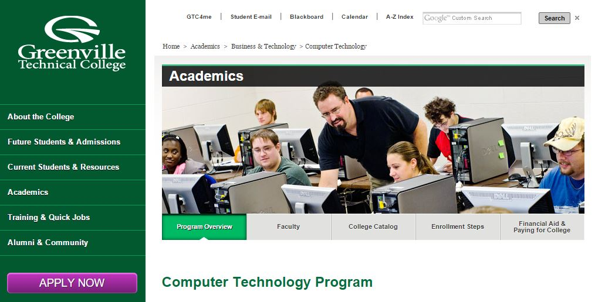
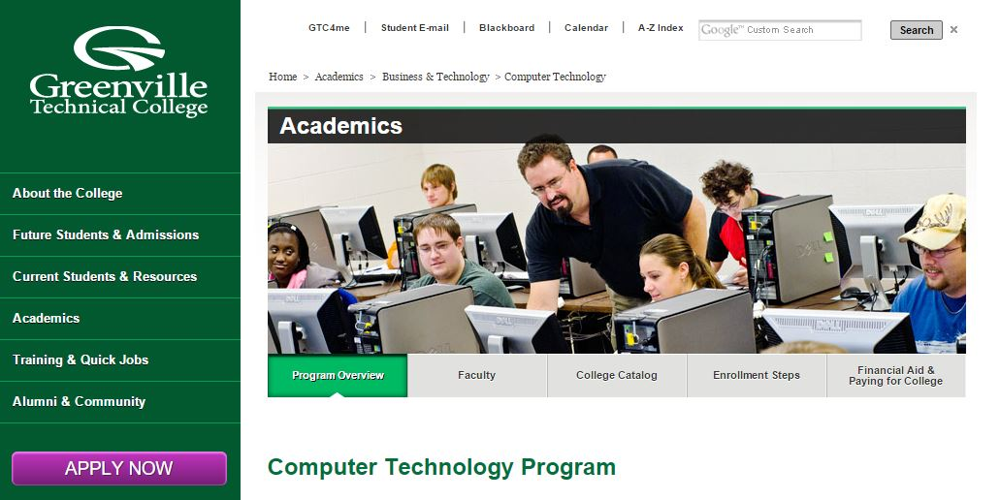

Hey, I'm Weston Richardson !
I just graduated in December 2015 from Winthrop University with a Bachelor of Science degree
in Digital Information Design, and specializing in web applications. As a part of my job
search I've created this site to help convey my skill set, and to provide prospective employers
a glimpse into who I am as a person.
On this website, I'll provide links to pages where I utilize different technologies and approaches.
The code will be stored on GitHub for review if someone is interested. I'll also share my resume
which documents college classwork and projects.
I enjoy developing web applications, but I probably enjoy being a team member working on group
projects rather than doing programming alone. I like the camaraderie when team members are all
contributing to a common goal.
So I hope you find my site acceptable as a demonstration of a new college graduate's capabilities.
This page uses parallax scrolling and I'm currently working on implementing responsive design
techniques with HTML, CSS, and jQuery.
My mother has recently been experimenting with homemade hummus recipes. Everyone seems to like them,
well most of them anyway ;-) My dad started talking about sharing them online, and we got the idea
for a website.
I decided to develop the "Homemade Hummus" site using tools that I have not been exposed to in order
to learn something new and help my job search. I chose Ruby-on-Rails and MySQL because it seems to
power several well known websites like Twitter, Github, Hulu, and BaseCamp.
Ruby-on-Rails is an MVC framework that does a lot of work for a developer, especially with database
interaction.
As of early March 2016, the site is still under development. But I expect to have the link for
Homemade Hummus live before April. My working code is on Github during development.

I developed my first website in the summer of 2012, after finishing studies at
Greenville Technical College.website in the summer of 2012. The website showcased
a collection of programming techniques I learned while there. The site still
exists, but is very rudimentary compared to my capabilities today. Still, I'll
link to it below to show some other programming that I've done previously.
I just graduated in December 2015 from Winthrop University with a Bachelor of Science degree
in Digital Information Design, and specializing in web applications. As a part of my job
search I've created this site to help convey my skill set, and to provide prospective employers
a glimpse into who I am as a person.
On this website, I'll provide links to pages where I utilize different technologies and approaches.
The code will be stored on GitHub for review if someone is interested. I'll also share my resume
which documents college classwork and projects.
I enjoy developing web applications, but I probably enjoy being a team member working on group
projects rather than doing programming alone. I like the camaraderie when team members are all
contributing to a common goal.
So I hope you find my site acceptable as a demonstration of a new college graduate's capabilities.
This page uses parallax scrolling and I'm currently working on implementing responsive design
techniques with HTML, CSS, and jQuery.
My mother has recently been experimenting with homemade hummus recipes. Everyone seems to like them,
well most of them anyway ;-) My dad started talking about sharing them online, and we got the idea
for a website.
I decided to develop the "Homemade Hummus" site using tools that I have not been exposed to in order
to learn something new and help my job search. I chose Ruby-on-Rails and MySQL because it seems to
power several well known websites like Twitter, Github, Hulu, and BaseCamp.
Ruby-on-Rails is an MVC framework that does a lot of work for a developer, especially with database
interaction.
As of early March 2016, the site is still under development. But I expect to have the link for
Homemade Hummus live before April. My working code is on Github during development.

I developed my first website in the summer of 2012, after finishing studies at
Greenville Technical College.website in the summer of 2012. The website showcased
a collection of programming techniques I learned while there. The site still
exists, but is very rudimentary compared to my capabilities today. Still, I'll
link to it below to show some other programming that I've done previously.
I just graduated in December 2015 from Winthrop University with a Bachelor of Science degree in Digital Information Design, and specializing in web applications. As a part of my job search I've created this site to help convey my skill set, and to provide prospective employers a glimpse into who I am as a person.
On this website, I'll provide links to pages where I utilize different technologies and approaches. The code will be stored on GitHub for review if someone is interested. I'll also share my resume which documents college classwork and projects.
I enjoy developing web applications, but I probably enjoy being a team member working on group projects rather than doing programming alone. I like the camaraderie when team members are all contributing to a common goal.
So I hope you find my site acceptable as a demonstration of a new college graduate's capabilities. This page uses parallax scrolling and I'm currently working on implementing responsive design techniques with HTML, CSS, and jQuery.
My mother has recently been experimenting with homemade hummus recipes. Everyone seems to like them, well most of them anyway ;-) My dad started talking about sharing them online, and we got the idea for a website.
I decided to develop the "Homemade Hummus" site using tools that I have not been exposed to in order to learn something new and help my job search. I chose Ruby-on-Rails and MySQL because it seems to power several well known websites like Twitter, Github, Hulu, and BaseCamp.
Ruby-on-Rails is an MVC framework that does a lot of work for a developer, especially with database interaction.
As of early March 2016, the site is still under development. But I expect to have the link for Homemade Hummus live before April. My working code is on Github during development.
I developed my first website in the summer of 2012, after finishing studies at Greenville Technical College.website in the summer of 2012. The website showcased a collection of programming techniques I learned while there. The site still exists, but is very rudimentary compared to my capabilities today. Still, I'll link to it below to show some other programming that I've done previously.